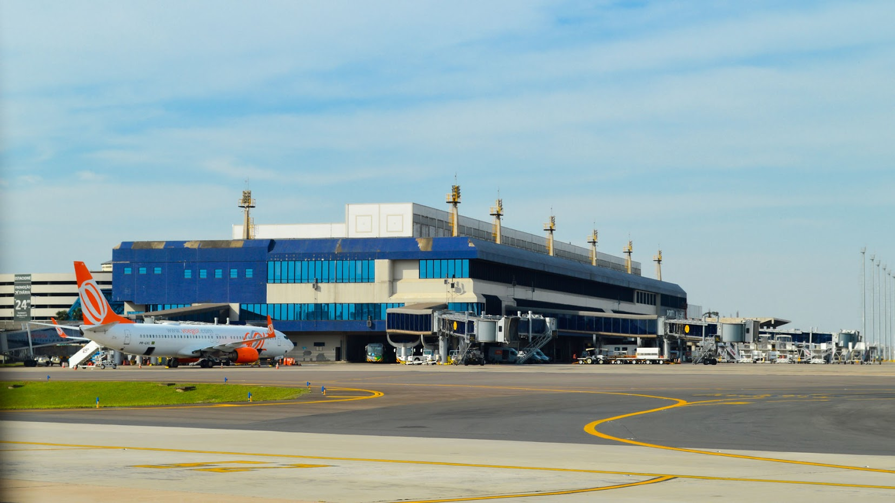

Como chegar em Gramado, RS?

O Aeroporto de Porto Alegre, Salgado Filho, é o principal aeroporto do Rio Grande do Sul e o principal aeroporto para chegar a Gramado. Ele fica a cerca de 115 km de Gramado e, devido à distância, você precisará de outro meio de transporte adicional para chegar à Serra Gaúcha, sendo os principais: ônibus, transfer, carro alugado ou táxi/Uber. Também existe a opção de pegar um voo da Azul Conecta entre Porto Alegre e Canela que faz o trajeto rapidamente!